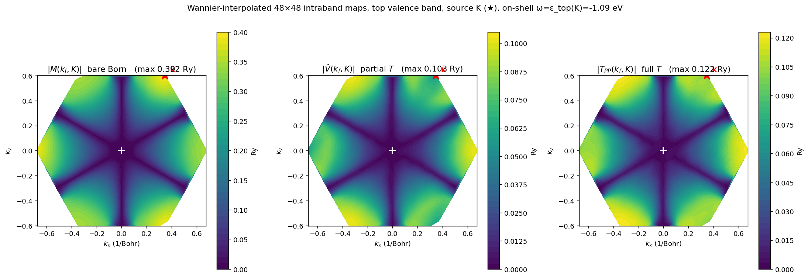
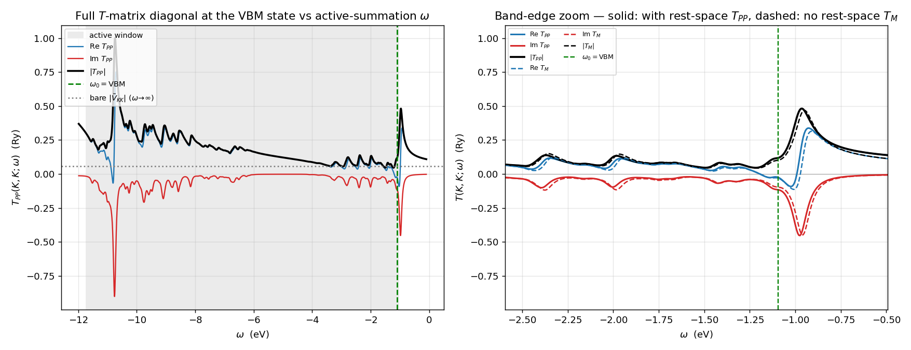

Contents
These are the first end-to-end numerical results of the EDT package on the MoS₂ sulfur vacancy (primitive NSCF, 150 bands, $12\times12$ $k$-grid; 11-band valence active manifold; defect potential from the $V_d/V_p$ cubes, vacuum-aligned). They cover three milestones: the full downfolded-potential block $\tilde V=M+\Sigma$ (P3), the active-space $T$-matrix $T_{PP}=[1-\tilde V G^A]^{-1}\tilde V$ (P5-a), and the Wannier / Koster–Slater locality study (P5-b). All matrix elements are validated against EDI's first-Born kernels; no raw data is published — only the summary tables and figures below.
Reference energy $\omega_0=-1.0941$ eV (valence-band maximum), Sternheimer broadening $\eta=0.05$ eV, active window $[-11.74,-1.04]$ eV, $N_k=144$.
1. The downfolded potential block $\tilde V$ (P3)
The rest-space (distant-band) dressing is folded into an effective active-space potential
assembled over the full BZ with the $1/N_k$ measure. The full $1584\times1584$ block ($11$ bands $\times\,144$ $k$) was computed by a pool-parallel $k'$-sum (1 wholenode node, 36 MPI ranks = 36 pools, 2 h 11 m), each rank owning the full $G$-grid so h_psi runs natively at its pool-local channel $k'$.
Validation (all pass):
| check | result | what it confirms |
|---|---|---|
| Born limit (T1) | source ket $=$ EDI $M$ to $2.3\times10^{-13}$ Ry | $\Delta V$-as-ket (local + KB nonlocal) exact |
| per-rank $H_0$ gate | $\langle\psi|H_0|\psi\rangle=\varepsilon$ to $6.0\times10^{-10}$ eV (all ranks) | Sternheimer operator setup correct |
| Hermiticity | $\lVert\tilde V-\tilde V^\dagger\rVert=9\times10^{-12}$ (pre-symmetrization) | $M,\Sigma$ independently Hermitian $\Rightarrow$ assembly correct |
| in-situ cross-check | band-17/$\Gamma$: $\tilde V_{nn}=-0.11712$ Ry $=$ single-rank diagonal to 6 digits | cross-pool MPI assembly correct |
Physics — strongly beyond-Born. At the VBM ($\Gamma$, top valence band): $M_{nn}=+0.701$, $\Sigma_{nn}=-0.819$, $\tilde V_{nn}=-0.117$ Ry — the rest dressing is larger than, and opposite in sign to, the bare Born coupling. Over the whole manifold:
| quantity | value | reading |
|---|---|---|
| $\lVert M\rVert_F,\ \lVert\Sigma\rVert_F,\ \lVert\tilde V\rVert_F$ | $367,\ 422,\ 100$ Ry | $\lVert\Sigma\rVert>\lVert M\rVert$; $\tilde V$ is $\sim\tfrac14$ of $M$ |
| $\lVert\Sigma\rVert/\lVert M\rVert$ | $1.15$ | rest dressing exceeds first Born |
| states with $|\Sigma_{nn}|>|M_{nn}|$ | $976/1584$ $(62\%)$ | majority strongly dressed (sign flips) |
| $\lVert\tilde V_{\rm offdiag}\rVert/\lVert\tilde V_{\rm diag}\rVert$ | $24.6$ | scattering is overwhelmingly $k$-changing |
The rest dressing screens the bare defect potential: the downfolded $\tilde V$ is $\sim3.7\times$ weaker in norm than $M$. First-Born (EDI) therefore overestimates the coupling here — exactly the regime that motivates the $T$-matrix.
The screening is anisotropic in $k$-space. Because the bare $M$, the partial $T$-matrix $\tilde V$, and the full $T_{PP}$ are all localized in the Wannier basis, each can be Wannier-interpolated to a fine grid (the band-projection uses $H_W=U^\dagger E U$ from the same gauge as the matrix elements, so the round-trip is exact on the coarse grid). Fixing the source at the high-symmetry $K$ point on the top valence band (intraband, on-shell), the three amplitudes over a $48\times48$ final-$k_f$ grid are:

Figure 1. Wannier-interpolated ($48\times48$) intraband scattering from the source $K$ (★) on the top valence band, on-shell at $\omega=\varepsilon_{\rm top}(K)=-1.09$ eV (Cartesian $k$, folded to the 1st BZ; + = Γ; colour = magnitude in Ry). Left bare Born $|M(k_f,K)|$ peaks at the forward channel $K$ ($0.392$ Ry). Middle partial $T$-matrix $|\tilde V|=|M+\Sigma|$: the rest dressing cuts the coupling $\sim3.8\times$ (max $0.103$) and guts the forward channel $6.6\times$, to $0.059$ Ry. Right full $T$-matrix $|T_{PP}|=\bigl|[1-\tilde V G^A]^{-1}\tilde V\bigr|$: the active resummation restores $\sim1.7\times$ of multiple scattering (forward $0.102$ Ry) but stays $\sim3$–$4\times$ below the bare coupling $M$. The rest-space dressing thus both weakens and reshapes the scattering — directly reshaping the transport relaxation time. The interpolation is validated by the exact round-trip at $k_f=K$, which reproduces the raw block ($|M|=0.392$, $|\tilde V|=0.059$ Ry).
2. Active-space $T$-matrix $T_{PP}$ (P5-a)
With $\tilde V$ in hand, the active multiple scattering is resummed by one small inversion on the coarse grid,
where the BZ measure $1/N_k$ lives in $G^A$ (the same $1/N_k$ that appears in $\Sigma$ — see the $k'$-normalization note).
Validation (code correct): as the coupling is scaled to zero ($\lambda\to0$) or $\eta\to\infty$ (so $G^A\to0$), the solver returns $T\to\tilde V$ to $\sim10^{-4}$.
Result — rest-space scattering cuts the resummed amplitude. Both $T_M$ and $T_{PP}$ are full active $T$-matrices (the resummation is the same); they differ only by whether rest-space (high-energy, out-of-window) scattering is folded into the input ($M$ vs $\tilde V=M+\Sigma$). Evaluated at the VBM:
| input | resummed $\lVert T\rVert_F$ | amplification |
|---|---|---|
| $M$ — no rest-space | $\lVert T_M\rVert=584$ Ry | $\times1.6$ vs $M$ |
| $\tilde V=M+\Sigma$ — with rest-space | $\lVert T_{PP}\rVert=297$ Ry | $\times3.0$ vs $\tilde V$ |
$T_{PP}=297$ Ry sits a factor $\sim2$ below the rest-space-free $T_M=584$ Ry, and the two differ by $53\%$ — including rest-space scattering materially changes the operator. A scan over $\omega$ shows $\lVert T_{PP}\rVert/\lVert\tilde V\rVert\approx1$ across most of the window but jumps to $4.4$ at the VBM — the active multiple scattering is resonant at the band edge, where the carriers live.
3. Energy dependence of the full $T$-matrix
$T_{PP}$ carries a second energy — the $\omega$ in the active resolvent $G^A_a(\omega)=(1/N_k)/(\omega-\varepsilon_a+i\eta)$ — and it behaves quite differently from the $\omega_0$ that dresses $\tilde V$. For $\tilde V=M+\Sigma(\omega_0)$ the rest manifold is gapped from $\omega_0$ (no poles, real, $\omega$-insensitive); for $T_{PP}(\omega)$ the active manifold sits on $\omega$, so $G^A(\omega)$ has a pole at every active $\varepsilon_a$ and $T_{PP}$ is genuinely resonant, with $\eta=0.05$ eV setting the width. This is where $\eta$ matters.
The whole $\omega$-dependence has a closed form. With $z=\omega+i\eta$ and the $\omega$-independent Hermitian effective Hamiltonian $H_{\rm eff}=E+\frac{1}{N_k}\tilde V$,
so one diagonalization gives every $\omega$ at once and the poles $\lambda_n$ are the $T$-matrix resonances (the active manifold dressed by the defect). For the diagonal of the VBM state $a_K=(K,\text{band }17)$,
which reproduces a direct $1584\times1584$ solve to $1.3\times10^{-14}$.

Figure 2. Diagonal $T_{PP}(K,K;\omega)$ at the VBM state ($k_i=k_f=K$, top valence band) vs the active-summation energy $\omega$. Left: Re, Im, and $|\cdot|$ across the active window. Far from resonances $|T_{PP}|\to$ the bare $|\tilde V_{KK}|=0.059$ Ry (the $G^A\to0$ limit); inside the window the dense active spectrum, broadened by $\eta$, makes it resonant and $\mathrm{Im}\,T_{PP}<0$ (the scattering rate) turns on. Right (band-edge zoom): real (blue), imaginary (red), and modulus (black) for both inputs — solid $T_{PP}$ (with rest-space), dashed $T_M$ (no rest-space). A sharp resonance at $\omega\approx-0.97$ eV — a defect state that the downfolded $\tilde V$ pushes $\sim0.12$ eV above the VBM (the $\frac{1}{N_k}\tilde V$ term lifts $\lambda_{\max}$): $\mathrm{Re}$ disperses through zero while $\mathrm{Im}$ dips negative (the absorptive scattering rate), and adding rest-space (solid vs dashed) mainly shifts/broadens the resonance. The on-shell point $\omega_0=$ VBM (green) sits on its rising edge: $T_{PP}(K,K)=-0.025-0.116\,i$ Ry, $|T_{PP}|=0.119$, imaginary-part-dominated — i.e. the band-edge scattering rate. The two inputs $|T_M|$ (no rest-space) and $|T_{PP}|$ (with rest-space) nearly coincide at this diagonal element, but that is misleading: the strong active resummation pulls both bare diagonals ($0.39$ and $0.059$) to $\sim0.1$, forgetting the bare value. The rest-space effect is robust instead in the operator norm — $\lVert T_M\rVert/\lVert T_{PP}\rVert\approx2$ right across the window (§2) — not in this single diagonal.
4. Wannier representation and locality (P5-b)
The textbook way to avoid the large $(N_b N_k)$ inversion on fine grids is the Koster–Slater / defect-Green's-function trick: rotate $\tilde V$ to a localized Wannier basis, $\tilde V^W(R',R)=\!\big[U^\dagger(k_f)\,\tilde V(k_f,k_i)\,U(k_i)\big]$ Fourier-transformed, and invert only on the defect's compact support. This requires $\tilde V^W(R',R)$ to be short-ranged — which in turn requires the Wannier rotation $U(k)$ to be in the same Bloch gauge as the $\psi_{nk}$ that build $M$ (exactly the consistency EDI's edbloch2wane enforces by construction).
A gauge mismatch — found and fixed. Our first attempt reused the existing filukk, which had been produced by a separate 17-band Wannier90 run, whereas edt.x computes $\tilde V$ from the 150-band NSCF evc. Different runs carry different per-$k$ Bloch phases (and degenerate-subspace bases), so $U^\dagger M U$ was not smooth. The fingerprint: the electron-index decay of $M^W(R_e;q)$ collapsed at $q=0$ (phase-insensitive) but stayed flat for $q\neq0$ (phase-sensitive) — a per-$k$ gauge mismatch, not a real non-locality. (Band/eigenvalue checks pass either way, since eigenvalues are gauge-free, which is why this hid initially.)
The fix is to re-Wannierize on the 150-band NSCF with the identical Wannier space — same projections (Mo:$d$, S:$p$), same windows, the same 11 valence bands 7–17 (exclude_bands = 1-6,
18-150) — giving a filukk consistent with the evc that build $M$ (its Wannier interpolation reproduces the NSCF bands to $2\times10^{-5}$ eV).

Figure 3. Electron-index decay $\lVert M^W(R_e;q)\rVert$. Left (old filukk, 17-band run): $q\!\neq\!0$ is flat — the gauge mismatch. Right (new filukk, re-Wannierized on the 150-band NSCF): every $q$ now decays together by $\sim10^{3}\times$ over $\sim5$ cells.
With the consistent gauge, $\tilde V^W$ is localized. Wannierizing the downfolded potential $\tilde V=M+\Sigma$ itself (both Bloch indices) gives a short-ranged object: peaked on the defect cell and decaying $\sim250\times$, both as a two-point matrix and in the electron index for every momentum transfer $q$.

Figure 4. Wannierization of $\tilde V$ and its locality. Left: both-index $\lVert\tilde V^W(R',R)\rVert_F$ by shell $\max(|R'|,|R|)$ — flat with the mismatched gauge (red), but with filukk_150 (blue) it peaks on the defect cell ($\sim3$ cells from the Wannier origin) and decays $\sim250\times$. Right: electron-index $\lVert\tilde V^W(R_e;q)\rVert$ decays $\sim10^{3}\times$ for every $q$ — $\tilde V^W$ is genuinely short-ranged.
A real-space cut makes the localization concrete. The on-site block $\tilde V^W_{ij}(R,R)$ (same cell $R$, an $11\times11$ Wannier matrix) is largest on the defect cell — here $R_d=(3,3)$, dominant orbital $|\tilde V^W_{55}(R_d,R_d)|=0.52$ Ry — and for a fixed pair $(i,j)$ it falls off with the minimum-image distance of $R$ from the defect:

Figure 5. On-site downfolded potential $|\tilde V^W_{ij}(R,R)|$ for a fixed Wannier pair (dominant $i\!=\!j\!=\!6$; $(1,1)$ and $(1,2)$ shown for context) vs the minimum-image distance of cell $R$ from the defect. It drops from $0.52$ Ry on the defect cell to $\sim\!10^{-3}$ Ry one cell ($\sim3.2$ Å) away, with envelope decay length $\lambda\approx2$ Å ($<1$ cell) — the downfolded potential is confined to the defect site.
The localized $\tilde V^W$ is exactly what makes the truncated Koster–Slater inversion $T=[1-\tilde V^W G^A]^{-1}\tilde V^W$ converge quickly:
| $R_{\rm cut}$ | subspace dim | $\lVert T\rVert$ old (mismatched gauge) | $\lVert T\rVert$ new (consistent gauge) |
|---|---|---|---|
| 2 | 275 | 0.057 | 0.057 |
| 3 | 539 | 0.19 | 1.72 |
| 4 | 891 | 0.59 | 2.06 (99.6%) |
| 6 | 1584 | 2.06 | 2.06 |

Figure 6. Koster–Slater truncation $\lVert T(R_{\rm cut})\rVert$ vs the cutoff radius (subspace dimension under each tick). With the gauge-consistent filukk_150 (blue) the inversion converges by $R_{\rm cut}=4$ (dim 891, $\sim56\%$ of the full 1584); with the mismatched gauge (red) it only reaches the full value at the full subspace. The localized $\tilde V^W$ is what makes the truncation effective — the payoff of the gauge fix.
So the neutral S-vacancy potential is short-ranged, as expected — the earlier "flat $\tilde V^W$" was entirely the gauge mismatch, not a supercell-size or range-separation problem. On this coarse $12\times12$ grid the converged subspace ($R_{\rm cut}\!=\!4$) is $\sim56\%$ of the full one; on a finer $k$-grid the fixed $\sim$3–4-cell defect extent becomes a small fraction — which is where the Koster–Slater speed-up pays off. P3 (the $\tilde V$ block) and P5-a ($T_{PP}$ in the Bloch basis) use no Wannier rotation and were unaffected throughout.
The fine-grid T-matrix, realized. The localized $\tilde V^W$ lets the active resummation use a fine host grid while still inverting only the small defect subspace. The host Green's function $G^A_{w'w}(\Delta R;\omega)=\frac1{N_f^2}\sum_{k}e^{2\pi i k\cdot\Delta R}\,[(\omega+i\eta)-H_W(k)]^{-1}$ is Wannier-interpolated on an $N_f\times N_f$ grid (from hr.dat), and $T=[1-\tilde V^W G^A]^{-1}\tilde V^W$ is solved in the 891-dimensional defect subspace ($R_{\rm cut}=4$) — never the full $n_b N_f^2$ ($\approx10^5$ at $N_f=96$). It reproduces the coarse direct inversion at $N_f=12$ and converges by $N_f\approx24$:

Figure 7. Convergence of the Wannier-basis active T-matrix $\lVert T_{PP}(\omega_0)\rVert$ with the host $G^A$ $k$-grid $N_f$. $N_f=12$ matches the coarse direct inversion (P5-a, $2.064$ Ry); the host converges by $N_f\approx24$ to $1.974$ Ry — the coarse $12\times12$ over-estimated by $\sim4.6\%$ (under-resolved band-edge DOS). The inversion stays $891$-dimensional at every $N_f$ — the payoff of the localized $\tilde V^W$.
5. On the magnitude of $\tilde V$
The Frobenius norm $\lVert\tilde V\rVert_F=100$ Ry can look alarming, but the individual matrix elements are small (RMS $\approx0.06$ Ry, on-site $\tilde V_{nn}\approx-0.12$ Ry): the norm is large only because it root-sum-squares $\sim2.5$ million matrix elements. The raw eigenvalues ($\tilde V\in[-80.6,+26.5]$ Ry, $M$ up to $211$ Ry) are the discrete-basis values; the physical scattering operator carries the BZ measure $1/N_k$ (it enters every $T$-matrix product through $G^A$), so the physical eigenvalues are $\sim\lambda/N_k\approx0.5$–$1.5$ Ry — bounded by $\max|\Delta V|\approx12$ Ry and giving a multiple-scattering parameter $\lVert\tilde V G^A\rVert\sim\mathcal O(1)$ (strong but sensible; the $T$-matrix resummation is essential, possibly resonant). See the $k'$-normalization note.
6. Status and next steps
P0–P3 and P5-a/b are complete and validated (the P5-b gauge consistency is now resolved with a filukk re-Wannierized on the 150-band NSCF). Open items:
- P6 — transport: feed $|T_{PP}(\omega)|^2$ on-shell into the golden-rule rate (replacing EDI's $|M|^2$) for a beyond-Born vs first-Born mobility (uses P5-a directly).
- fine-grid Koster–Slater transport using the gauge-consistent
filukk(P5-b machinery), where the localized $\tilde V^W$ delivers the inversion-size speed-up. - T9 / T5: rest-BZ-grid convergence of $\tilde V$ and Wannier-gauge invariance.